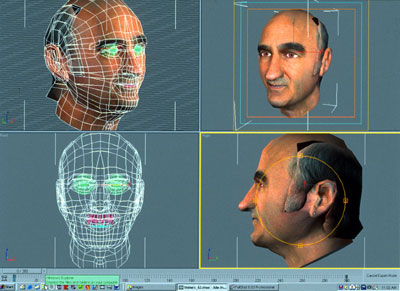

1000 DAYS OF THEORY
Stelarc's Prosthetic Head
Julie Clarke

3D Model: Barrett Fox
Our desire to construct simulated human talking machines may be traced to Joseph Faber's Euphonia (1830) an artificial face attached to the
front of a series of exposed bellows; plates, chambers and an artificial tongue that could make it speak.[1] Advanced computer technologies of the twenty first century, such as complex modeling and animation, audio speech synthesizing,
text to speech systems and image manipulation, have enabled the construction of virtual characters that closely mirror their human counterparts.
Envisioned, as standing in for the human these virtual beings may be used as virtual actors, interactive memory albums or visual speech tools for
hearing impaired people, replacing people altogether. To date, designers of these virtual beings have concentrated on simulating the human visage and
language, however Norman Badler explains that although animation quality is essential to creating a life-like simulation, the virtual being "...needs to
have goals, emotions, motivations...a background, a culture, and history".[2] It is within this context that
I will discuss Stelarc's recently exhibited Prosthetic Head -- an enhanced and modified Alice chat-bot that resembles the artist.
The Prosthetic Head when exhibited is projected onto a large screen in a darkened gallery space and its enormous size gives it a presence
that it would not have in a smaller format.[3] The audience may ask questions of the head and respond to
its replies, not by using spoken language, but by the obligatory use of a keyboard interface, positioned on a podium placed at an appropriate distance
from the Head. This text-based interface partly reflects communicative exchanges that occur in e-mail or on-line discussions, in which participants
may construct fictional identities within a space that has encouraged the rhetoric of fluid and multiple selves. Metaphoric of the cybernetic
condition it signifies the extent to which identity has been de-centered in techno-culture. As such it compels us to confront the partial, the fractal
and the fragmentary.
Designed to reflect this ontological state, Stelarc includes in the catalogue multiple still frames from the Prosthetic Head animation
highlighting repetition and the discernable differences that denote behavior. One of his statements in the catalogue focuses on the automatic,
repetitive aspects of human behavior. He maintains that "...we perform successfully because we perform habitually and automatically".[4] Stelarc alludes to our self-controlled and regulated internal system as well as behavioral aspects that
we remain unaware of which allows us to operate effectively as conscious beings, directed to the external environment. He said, perhaps in defense of
the Prosthetic Head, which is not a conscious entity, that "Even complex behavior is possible without consciousness". He also maintains that the
Prosthetic Head only becomes an intelligent agent through the "...overlaps and interfaces between bodies".[5] Whilst this might be consistent with human interaction, he is arguing here against the metaphysical notion that the mind is a
different concept from the body. Here, the mind is not the causal agent behind the actions and behavior of the individual, mind is indistinguishable
from its expression. The mind is what the body does; it is the body in interaction with other bodies or things.[6] Stelarc's argument that thinking is a presence, rather than an absence, is demonstrated by his exposure of the Prosthetic
Head's operating system -- "This embodied conversational agent has an IBM text-to-speech engine, real-time lip-syncing, speech synthesis and
facial expressions".[7] This information draws our attention to the direct relationship between the
operating program and the performance of the Head. Wittgenstein's example of the correlation between thought and action (quoted by Stelarc in the
catalogue) was: "We may say that thinking is essentially the activity of operating with signs.The activity is performed by the hand, when we think by
writing; by the mouth and larynx, when we think by speaking; and if we think by imagining signs or pictures..." [8] Having clearly established the Head as a program, Stelarc then uses the word "brain" to situate the source of the Head's
functioning.[9] There is no doubt that complex systems developed over the past forty years have come to
mirror biological organisms, since they are modeled on them. This has resulted in an overlap between the mechanical and the organic and challenges
prior definitions of life. Kevin Kelly described this situation well: "Human-made things are behaving more lifelike, and...life is becoming more
engineered".[10]
The facial expressions of the Prosthetic Head mirror in part its human counterpart. It talks and answers questions posed to it by the
general public and in a Wittgensteinian sense may be said to be exhibiting what we consider to be thought, since it is through visual cues provided by
the facial musculature that we understand that there is a conscious agent assigned to the moving face. However even this is made problematic by the
fact that human and not-human animals think without external expression. How then is "...identity and awareness...constructed as external"?[11] Baudrillard argues that intelligent machines only offer us the "spectacle of thought, and in
manipulating them people devote themselves more to the spectacle of thought than to thought itself".[12]
The difference which Stelarc does not make explicit, is that although human beings use language and learn appropriate cultural behavior through
repetition and reinforcement, they are unlike an automaton since they are able to learn from their embodiment in the world.[13] Even if the Prosthetic Head was programmed to learn from its interactions it would still be confined within a very
narrow spectrum of spatiality, and although it occupies physical space on a screen in the gallery, it has no physicality itself. Lacking a material
and substantial body, the Prosthetic Head is a virtual automaton an information device. However, having said that, because its visage is a
digital clone of Stelarc's, it has an aura attached to it that it would lack if Stelarc had chosen to present the conversational agent with a
unrecognizable face. Having both the semblance and characteristics of Stelarc the Prosthetic Head enables him to continue his performance
oeuvre.[14] However, since it is separate entity from Stelarc and only partly reflects his
self-identity, it is neither an addition to (prosthesis), nor proxy for his body. It is more likely a projection or extrusion of that partial self,
hence its synecdochal quality.
The need to rationalize the differences between virtual and organic beings reveals the level of anxiety or curiosity that is produced when we are
faced with a not-human other who is presented as more human than human. I say this because often not-human others, particularly those depicted in
science fiction films are constructed with characteristics that demonstrate those aspects of human nature and stature that we find appealing.
Strength, intelligence, and rationality are the most noticeable as is the humanist desire to become better and to overcome human frailty. This may be
why we find them disturbing, because we intuitively know that we cannot be like them and yet they are held up to us as a mirror of our latent desire
for perfection. Stelarc maintains that "...we fear what we have always been and what we have already become..." suggesting that what we remain ignorant
of, that is, our automatic and involuntary behavior is that which makes us like these very constructs which haunt our imagination.[15] I'm not sure if we fear that our autonomy is an illusion -- that we really do not have any control, or
whether we wish to jettison discriminatory perception in favor of total immersion in which we are flooded with information.
Stelarc acknowledges that it is language that tends to "...reinforce Platonic, Cartesian and Freudian constructs of internal representations, of
essences, of egos...", however, by isolating the Prosthetic Head as an object-in-itself -- as prosthesis, he unwittingly stages technology as
distinct from the body.[16] Although the Prosthetic Head may represent the posthuman condition,
that is, the human body that has been extended enhanced and extruded by technology it also paradoxically maintains the humanist notion that the
prosthesis/technology is a discrete entity from the human, thus upholding established binaries. A different reading, one consistent with current
techno-theorizing might see the Head, as a partial object, or body without organs, enacting the Deleuzian notion of desiring-machines,
connecting with partial, fragmented and multiple others.[17] The Prosthetic Head, animated,
virtual, fully embedded in and enabled by technology represents in this context the becoming-information of the human.
In 2002 Stelarc collaborated on a project with the Tissue Culture and Art Project (Oron Catts and Ionat Zurr), to grow a quarter-scale replica of
Stelarc's ear for exhibition.[18] They intend to broaden this project by growing quarter-scale replicas
of Stelarc's eyelids, lips, nose and chin. These partial facial features will effectively enable Stelarc to construct a living self-portrait, similar
to, but unlike the Prosthetic Head. This new project along with the Prosthetic Head raises provocative questions about the way that we
define life; since both works refer to different models, that is, the biological and the digital. Artists and scientists working within the field of
artificial life and artificial intelligence have generated discourses that suggest that AI's are in some sense alive. A-Lifers generally consider that
the creatures that they have constructed with a computer program are alive in that they fulfill some of the characteristics of living species, such as
their ability to reproduce, grow, evolve, be self-organizing, and adapt to their environment. Margaret A. Boden cuts through much of the
often-confusing distinctions that are drawn between biological definitions of life and those attributed to artificial life forms. She argues that
"Metabolism is a criterion of life"[19] and explains that "...metabolism is a type of material
self-organization which...involves the autonomous use of matter and energy in building, growing, developing, and maintaining the bodily fabric of a
living thing".[20] In relation to artificial creatures she maintains that although the creatures are
embedded in their environment they are not necessarily embodied.[21] She said "Metabolism...involves
material embodiment -- embodiment, not mere physical existence ".[22] She concludes her argument by
stating that the only purpose of dropping "...metabolism from our concept of life...is to allow virtual beings, which have physical existence but no body,
to count as life".[23] Those who promote the notion of artificial intelligence, that is, intelligence
that is constructed from a computer program also consider these constructs as intelligent life. But there are vast differences between the meaning of
the word life and the notion of liveliness.
Stelarc's proposed tissue-engineered facial portrait, mentioned above, would by all accounts constitute matter that is alive, in that each of the
cells would interact with each other in their environment, but they cannot interact in any meaningful way with the outside world. The Prosthetic
Head, which is not alive, in that it is not a material entity, creates the illusion that it can interact meaningfully with the general public. Its
liveliness and life like appearance makes problematic any attempt to define the word "life", since there is an overlap between some of its behavioral
characteristics and those of living organisms.
Since consciousness may be said to be a description of a state of awareness, which includes an appreciation of the other and particularly their
body in space in relation to ours, then the Prosthetic Head cannot be said to be aware in that sense, since its recognition of us is purely
through a set of coded instructions. Although we can recognize its difference from us, it cannot recognize our difference from it. Although it faces
us, it cannot return our gaze. Since it cannot know or experience the consequences of death, like us, the notion of death cannot affect its discourse.
As Baudrillard said "...they are immune even to the seduction of their own knowledge. Their virtue resides in their transparency, their functionality,
their absence of passion and artifice" [24]
When we interact with the Prosthetic Head we understand its voice, language and facial expressions as an indication of some level of mind,
since we exhibit these characteristics ourselves, whilst paradoxically having to admit that in the usual sense the head has no mind. Zizek said:
(Self) consciousness is a surface-screen that produces the effect of "depth", of a dimension beneath it. And yet, this dimension is accessible only
from the standpoint of the surface, as a kind of surface-effect: if we effectively reach behind the screen, the very effect of the "depth of the
person" dissolves. What we are left with is a set of meaningless processes that are neuronal, biochemical and so forth.[25]
This functionalist approach to describing consciousness does not take into account the complex interactions a person has with others and objects in
the outside world. It considers human exchange as a Baudrillardian interface between borders, as one screen encountering another.[26] However, having said that, the screens that we work with in computer culture have become
metaphorically fluid spaces in which the self is perceived as dispersed, rather than contained within the barrier of the skin. The screen interface
then becomes a boundary or limit that may be traversed by considering it as gateway or portal. However liberating this text-based communication may
appear, it is also paradoxically delimiting, since there is a distinct difference between self-identity and the way that we might represent ourselves
in text.
The technology behind the programming of the Prosthetic Head evolved from one developed by Joseph Weizenbaum and his ELIZA project. He
described the ELIZA program "...as operating within the MAC time-sharing system at MIT which makes certain kinds of natural language conversation
between man and computer possible". He explains that no matter how seductive such a device may be, "...often sufficient to dazzle even the most
experienced observer...once a particular program is unmasked, once its inner workings are explained in language sufficiently plain to induce
understanding, its magic crumbles away; it stands revealed as a mere collection of procedures, each quite comprehensible".[27] Even though Stelarc has made transparent the workings of the Prosthetic Head, by making an explicit link between the
underlying system program and its associative surface effects, its seductive qualities may lie in our responses to this not-human artifact. We might
enjoy its programming errors, such as one that resulted in it not being able recognize anyone whose name starts with J![28] We might even have sympathy for its inability (unlike us) to challenge its programming and seek alternative responses and
behavior to a situation.
Human to human interaction, unlike human to machine interaction solicits thought processes in which we read not only facial expressions but the
non-verbal behavior of the other in time and space. We have the ability to understand this behavior, to consider its context and adjust our own verbal
and non-verbal behavior by taking into account minute differences displayed in that person's reactions in order to respond to them in appropriate
ways. We are attuned to the unpredictability and complexity of the other and seek to, in our interactions to find a ground in which to communicate and
understand them. A prosthetic conversational agent, although novel in its responses does not have this ability and can only provide pre-programmed
answers, it will not and cannot take into account the emotional impact its responses may have on you, the physical environment or other variables
affecting you that could not be programmed to affect its responses. What the Prosthetic Head does provide is an opportunity for the
interrogator or respondent to fine-tune their ability to formulate interesting questions around key phrases that the program can respond to, as
Stelarc has said "...the Prosthetic Head is only as intelligent as the person who interrogates it".[29] Del Spooner (Will Smith) encountered this problem in I Robot (Dir. Alex Proyal, 2004), for when he asked a hologram a
question, it replied by saying, "My responses are limited. You have to ask the right question".
When we communicate with the Prosthetic Head it is not our own voice that we hear. We see, on screen, our partial thoughts transcribed into
text, which remains silent. Our thought processes are audible by the Head's reiteration of them through its responses. We present a voice that is
only present in text, whilst the head presents text through audible language. We become prosthesis to the head, which is made more intelligent through
our presence and it becomes prosthesis for us because it is a third ear, another way of listening for us. What I mean by this is that we are compelled
to view the words that we have chosen to present to the Prosthetic Head, which are then repeated back to us by it for us to hear. The Extra
Ear quarter scale project that Stelarc has represented as an image (on the side of his head or on his arm), as a material entity (the
tissue-engineered quarter-scale ear), is now conceptualized as virtual ear through the Prosthetic Head's propensity for deciphering the
questions that we ask of it.

3D Model: Barrett Fox
Represented as it is, detached from a body, the Prosthetic Head represents "the talking head"- a ubiquitous feature of television since its
inception, which utilizes a close-up camera in order to frame the presenter's head and shoulders. This framing makes what is said important, rather
than the physical characteristics of the remainder of the person's body. The Head presented in this manner, not only disavows the existence of a body,
but continues to support a metaphor used throughout recorded history as representing a hierarchical source of authority.[30] According to Jacques Le Goff "Organicist conceptions of society based on bodily metaphors...go back to Antiquity", and the head
as "...seat of the brain, was...for most peoples -- the organ that contains the soul".[31] He further
maintains that in the Christian system the symbolic value of the head was unusually strong "...because of its reference to Christ as the head of the
church...".[32] Whilst considering the Prosthetic Head, I am reminded of the large image of
Christ's head that occupied a unit chapel in the science fiction film THX1138 (Dir. George Lucas, 1971). Behind the still image of Christ's
head is a recorded voice on a continuous feedback loop activated when THX (Robert Duvall) enters. "My time is yours, go ahead", it says. Regardless of
what THX says about his feelings or his problems with his partner, the voice always has the same measured response. "Yes, I understand. Yes. Could you
be more specific". And it always ends with "Blessing of the Masses. Buy more. Be Happy". Whilst THX1138 was inflicted with problems of embodiment the
allure of the forgiving Christ lay in the authority of its virtual dis-embodiment.[33] Moreover,
Christ's face, like the Prosthetic Head conceals the fact that there is no person behind the mask only a voice, which is also disembodied.
Mikhail Bakhtin maintains that the mask is related to "...transition, metamorphosis, the violation of boundaries...based on a peculiar interrelation of
reality and image..."[34] So, rather than a screen, the Prosthetic Head provides an elaborate
camouflage to disguise the fact that when we interact with it we are actually only proposing questions to a computer program.
Certainly the Prosthetic Head is embedded, in that it is fixed in its own virtual domain, however it is not, as Stelarc suggests embodied.
However, having said that, its personhood is uncanny. The very fact that it is a head and not a body is telling for it shifts the emphasis in
Stelarc's work from the torso and limbs, which he has focused upon in his various performances to the face which identifies us as unique. In this
portrayal of a head bereft of a body, the obsolete "...inadequate, empty and involuntary..." body has become absent altogether, and yet it is the body in
its total physicality that affords us our personality.[35] Paradoxically, although Stelarc says "What
becomes important is not essences and identities but the overlaps and interfaces between bodies"[36], it
is the identity of the Prosthetic Head, its massive size, and its likeness to the artist that is paramount in this project. In other words, it
IS the face that becomes synonymous with identity. The skin of the Prosthetic Head, constructed from digital images of Stelarc' own head,
overlaid onto the polygon scaffold becomes not just a Prosthetic Head, but Stelarc's prosthetic head, for it is an animated, digital
self-portrait of the artist. The image of his stretched face, which occupies one full page in the Prosthetic Head exhibition catalogue, is one
that the artist provided recently as his self-portrait for Meanjin.[37] The Prosthetic
Head and its facial expressions highlight the fact that the human face is a feature of our body that we use sub-consciously to convey meaning. It
is a sophisticated sign system that was developed in humans prior to language acquisition, and as such communicates to others in a way that spoken
language cannot. More than anything else the human face has a particular way of expressing pathos; this is decidedly absent in the Prosthetic
Head!
Notes
---------------
[1] For more information about talking machines see: David Lindsay, "Talking Head", Invention and
Technology, Summer, 1997, pp.57-63. This article is online at: http://www.haskins.yale.edu/haskins/HEADS [Accessed 30/5/2005].
[2] Norman Badler, "Digital Humans: What Role Will They Play", Computer Graphics World, on line
at http://cgw.pennet.com/Article/Article_Display.cfm?Section=Archieves&Subsection, 30/5/2005, p2. [Accessed 30/5/2005]. Norman Badler, Centre for
Human Modeling and Simulation, University of Pennsylvania, Philadelphia, USA, hms.upenn.edu.
[3] The Prosthetic Head has been exhibited at New Territories in Glasgow, The ICA, London,
InterAccess, Toronto in 2003, as well as the Australian Center for the Moving Image, Federation Square, Melbourne, Australia in 2003. It has recently
been exhibited at the Sherman Galleries in Sydney in 2005. The writer interacted with it in Melbourne in 2003.
[4] Stelarc, Prosthetic Head, Catalogue essay, Sherman Galleries, Sydney, May 2005.
[5] Stelarc 2005.
[6] Gilbert Ryle, Concept of Mind, published in 1949 challenged the metaphysical notion that
mind is separate from the body. He argued against the concept of the mind being regarded as a ghost in the machine.
[7] Stelarc 2005.
[8] Stelarc 2005.
[9] This is a reversal of René Descartes use of a mechanistic metaphor to describe the movements of the
human body. See: Discourse on Method and The Meditations, Translated with an Introduction by F. E. Sutcliffe, Great Britain, Penguin Books,
1968, p73.
[10] Kevin Kelly, Out of Control: The New Biology of Machines, London: Fourth Estate, 1994.
p3.
[11] Stelarc 2005.
[12] Jean Baudrillard, The Transparency of Evil: Essays on Extreme Phenomena, Trans. James
Benedict, London & New York: Verso, 1993. p53.
[13] It is worth noting that Steven Middleton, one of the animators who has worked with Stelarc on
many of his projects is himself designing and programming an animated partial personality that has the ability to learn. Although the term "learn" is
certainly made problematic in this context. Information about Steven Middleton's projects may be accessed on line through his website:
http://home.vicnet.net.au/~stevem/
[14] This information came out of a conversation between Stelarc and the writer in 2004.
[15] Stelarc, "From Zombie to Cyborg Bodies: Extra Ear, Exoskeleton and Avatars", Alternate
Interfaces: Stelarc, Faculty of Art and Design, Monash University, Australia, 2002. p57.
[16] Stellarc 2002, p121.
[17] See: Slavoj Zizek. Organs without Bodies: On Deleuze and Consequences, New York & London:
Routledge, 2004.
[18] The quarter-scale extra ear was grown using tissue engineering technology and exhibited at the
Ian Potter Gallery, Federation Square, Melbourne.
[19] Margaret A. Boden, "Is Metabolism Necessary?" British Journal of Philosophy and Science,
Oxford University Press, 1999. p231.
[20] Boden, p237.
[21] Boden, p239.
[22] Boden, p240.
[23] Boden, p245.
[24] Baudrillard, The Transparency of Evil, p52.
[25] Zizek, p118.
[26] See: Jean Baudrillard, Simulations, Trans. Paul Foss, Paul Patton and Philip Beitchman,
New York: Semiotext, 1983.
[27] Joseph Weizenbaum, "ELIZA-A Computer Program For the Study of Natural Language Communication
Between Man and Machine", MIT, Communications of the ACM, Volume 9, No. 1 (January 1966), 36-35.
[28] When I asked Stelarc why the Prosthetic Head did not recognize my name, he said that it
did not recognize names that begin with a J.
[29] Stelarc 2005.
[30] Traditional portraiture primarily served the function of delineating those who had status and
authority from those who had none.
[31] Jacques Le Goff, "Head or Heart? The Political Use of Body Metaphors in the Middle Ages",
Fragments for a History of the Human Body, Part Three, (eds.) Michel Feher with Ramona Naddaff and Nadio Tazi, Zone 5, New York: Urzone Inc.,
1989. p13.
[32] Le Goff, p16.
[33] Donna Haraway points out how during the Scientific Revolution the man of science (the modest
witness) had to disassociate himself from the body, which was considered biased and feminine. See:
Modest_Witness@Second_Millennium.FemaleMan©_Meets_OncoMouseTM: Feminism and Technoscience, New York & London: Routledge, 1997. p24.
[34] Mikail Bakhtin, Rabelais and His World, translated Helen Iswolsky, Cambridge: MIT Press,
1968. Quoted in Ned Lukacher, Primal Scenes, Literature, Philosophy, Psychoanalysis, Ithaca and London: Cornell University Press, 1986, p91.
[35] Stelarc 2005.
[36] Stelarc 2005.
[37] Julie Clarke, "Face-off," Interview with Stelarc, Portraits of the Artist, Meanjin (ed.Dr
Ian Britain), Meanjin Company Ltd., in association with The Australian Centre, The University of Melbourne, Vol 64, Numbers 1-2, June 2005.
pp182-183. In the interview Stelarc said that the Prosthetic Head was a digital self-portrait.
--------------------
Julie Clarke was awarded her PhD in the Cinema Studies Program of the School of Art History, Cinema, Classics and Archaeology at The University of Melbourne in early 2005. She currently holds the appointment of Honorary Fellow. She has published a number of articles on Stelarc's work the most recent being a chapter in Stelarc: The Monograph, (ed. Marquard Smith), The MIT Press, Cambridge, Massachusetts, 2005